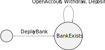

Ekasilicon Audit Methodology
The Ekasilication auditing approach begins with the identification of desired properties that the program should exhibit. These identified properties, combined with your program’s implementation, guide the development of a custom model specific to your program and amenable to proving the properties. This model captures the high-level logical roles of the quantities and constraints your program uses. We specialize a TEAL static analyzer with this custom model to obtain program-specific results. The range of customization available to models is fairly large and can typically accommodate the present implementation of the program (assuming the desired properties actually hold).
safety properties, which express that some destination state Y is not reachable from point X or that some transition is not feasible from point X;
liveness properties, which express that some destination state Y is invariably reachable from point X or that some transition is always feasible from point X; or
invariance properties, which express that something at a particular state is true regardless of the path taken to arrive at it.
Whatever the custom model, the analyzer also detects the violation of generic safety properties, such as an inadequately-constrained ‘OnCompletion‘ parameter.
1 Worked Example
To illustrate this process, we will walk through the process on a simple program.
1.1 The Program
The following program implements a simple bank which tracks both individual account balances and the total account balance.
#pragma version 6 |
txn ApplicationID |
bz deploy |
main: |
txn OnCompletion |
dup |
int OptIn |
== |
bz action |
create: |
pop |
int 0 |
byte "" |
int 0 |
app_local_put |
b exit |
action: |
int NoOp |
== |
assert |
txna ApplicationArgs 0 |
btoi |
dup |
bz withdraw |
deposit: |
int 1 |
== |
assert |
txna ApplicationArgs 1 |
btoi |
dup |
int 0 |
byte "" |
app_local_get |
+ |
int 0 |
byte "" |
uncover 2 |
app_local_put |
byte "" |
app_global_get |
uncover 1 |
+ |
byte "" |
uncover 1 |
app_global_put |
b exit |
withdraw: |
pop |
txna ApplicationArgs 1 |
btoi |
int 0 |
byte "" |
app_local_get |
dig 1 |
- // if succeeds, then balance was high enough |
int 0 |
byte "" |
uncover 2 |
app_local_put |
byte "" |
app_global_get |
uncover 1 |
- |
byte "" |
uncover 1 |
app_global_put |
b exit |
deploy: |
byte "" |
int 0 |
app_global_put |
exit: |
int 1 |
The bank is initialized with a global balance of 0 and no accounts.
A client opens an empty account (tied to their address) at the bank by opting in.
A client can deposit funds into their account.
A client can withdraw funds from their account.
As a simple example, no assets are actually transferred, so the client provides the deposit amount as an argument. Accordingly, this example exhibits no issues related to minimum account balances or fees, which would manifest in real-world dApps. Nevertheless, there are not-entirely-trivial properties that we may wish to show for this program which have analogues in real-world programs.
Logical blocks are labelled with informative names and regardless of whether they are jump targets.
It contains a comment which is suggestive of a desired property.
1.2 The Properties
the amount deposited is credited to the account and the global total;
the amount withdrawn is debited from the account and the global total;
the amount withdrawn does not exceed the net deposit amount; and
once the bank is deployed, the global total is always the sum of the account totals.
1.3 The Model
A model conveys how machine actions should be interpreted in terms of the high-level program logic. For this program, these terms are whether the bank exists, whether a given account exists, the balance of a particular account, and the action that a client takes.
\mathrm{ApplicationID} = 0 corresponds to the \mathrm{DeployBank} action.
If the bank exists, \mathrm{OnCompletion} = 1 corresponds to the \mathrm{CreateAccount} action.
If the bank exists and the client has an account, \mathrm{OnCompletion} = 0 and \mathrm{btoi}(\mathrm{ApplicationArgs}[0]) = 0 correspond to the \mathrm{Withdraw} action, and \mathrm{btoi}(\mathrm{ApplicationArgs}[1]) represents the amount to withdraw.
If the bank exists and the client has an account, \mathrm{OnCompletion} = 0 and \mathrm{btoi}(\mathrm{ApplicationArgs}[0]) = 1 correspond to the \mathrm{Deposit} action, and \mathrm{btoi}(\mathrm{ApplicationArgs}[1]) represents the amount to deposit.
If the bank exists, \mathrm{Global}[{}’{}’] corresponds to \mathrm{GlobalBalance}.
If an account for \mathit{addr} exists, \mathrm{Local}[\mathit{addr},{}’{}’] corresponds to \mathrm{LocalBalance}[\mathit{addr}].
1.4 The Transition Schemas
\mathit{action} = \mathrm{DeployBank}
\vdash \mathrm{BankExists}
\mathrm{GlobalBalance} := 0
\mathrm{BankExists}
\mathit{action} = \mathrm{CreateAccount}
\neg \mathrm{AccountExists}[\mathrm{Sender}]
\vdash \mathrm{AccountExists}[\mathrm{Sender}]
\mathrm{LocalBalance}[\mathrm{Sender}] := 0
\mathrm{BankExists}
\mathit{action} = \mathrm{Withdraw}
\mathrm{AccountExists}[\mathrm{Sender}]
\mathrm{GlobalBalance} \ge \mathrm{Amount}
\mathrm{LocalBalance}[\mathrm{Sender}] \ge \mathrm{Amount}
\mathrm{GlobalBalance} := \mathrm{GlobalBalance} - \mathrm{Amount}
\mathrm{LocalBalance}[\mathrm{Sender}] := \mathrm{LocalBalance}[\mathrm{Sender}] - \mathrm{Amount}
\mathrm{BankExists}
\mathit{action} = \mathrm{Deposit}
\mathrm{AccountExists}[\mathrm{Sender}]
\mathrm{GlobalBalance} + \mathrm{Amount} < 2^{64}
\mathrm{LocalBalance}[\mathrm{Sender}] + \mathrm{Amount} < 2^{64}
\mathrm{GlobalBalance} := \mathrm{GlobalBalance} + \mathrm{Amount}
\mathrm{LocalBalance}[\mathrm{Sender}] := \mathrm{LocalBalance}[\mathrm{Sender}] + \mathrm{Amount}

which reflects that this program implements a dApp which does not "progress" through a protocol in any meaningful sense.
1.5 Proving the Properties
We can now look at how each previously-given property can be proved from this account of the program.
1.5.1 The amount deposited is credited to the account and the global total
This is local to the \mathrm{Deposit} transition.
1.5.2 The amount withdrawn is debited from the account and the global total
This is local to the \mathrm{Withdraw} transition.
1.5.3 The amount withdrawn does not exceed the net deposit amount
This property is local to the \mathrm{Withdraw} once it is established that the account balance reflects the net effect of all previous deposits and withdrawls to the account.
For this, we prove that the account balance is invariant under any transaction whose \mathrm{Sender} differs from the account owner. This is a simple case analysis on transitions. We then use induction on the sequence of transitions, considering whether the \mathrm{Sender} is the owner of the account under interest at each step. This establishes that the current account balance reflects the net effect of previous transitions, and then the local check can be applied to obtain the result.
1.5.4 Once the bank is deployed, the global total is always the sum of the account totals
Expressed mathematically, this variant is \mathrm{GlobalBalance} = \sum_{\mathit{addr} \in \mathrm{Account}} \mathrm{LocalBalance}[\mathit{addr}] and proved by induction.
The base case is that transaction schema 1, which effects the \mathrm{DeployBank} action, initializes the global balance to 0 and the deployment begins with an empty \mathrm{Account} set.
0 = \sum_{\mathit{addr} \in \emptyset} \mathrm{LocalBalance}[\mathit{addr}]
The inductive step considers transaction schemas 1, 2, and 3 which effect the remaining actions.
Before the transition, we assume that \mathrm{GlobalBalance}_\mathit{in} = \sum_{\mathit{addr} \in \mathrm{Account}_\mathit{in}} \mathrm{LocalBalance}_\mathit{in}[\mathit{addr}] holds. For each transition, we set out to show that \mathrm{GlobalBalance}_\mathit{out} = \sum_{\mathit{addr} \in \mathrm{Account}_\mathit{out}} \mathrm{LocalBalance}_\mathit{out}[\mathit{addr}] where the definitions of \mathrm{GlobalBalance}_\mathit{out}, \mathrm{Account}_\mathit{out}, and \mathrm{LocalBalance}_\mathit{out} are specific to the transaction schema.
The \mathrm{CreateAccount}-actioned schema succeeds only when a \mathrm{Sender} account doesn’t already exist, so we have \mathrm{GlobalBalance}_\mathit{out} = \mathrm{GlobalBalance}_\mathit{in}, \mathrm{Account}_\mathit{out} = \mathrm{Account}_\mathit{in} \cup \{ \mathrm{Sender} \}, and \mathrm{LocalBalance}_\mathit{out} = \mathrm{LocalBalance}_\mathit{in}[ \mathrm{Sender} \mapsto 0 ].
For the \mathrm{Withdraw}-actioned schema, we have \mathrm{GlobalBalance}_\mathit{out} = \mathrm{GlobalBalance}_\mathit{in} - \mathrm{Amount}, \mathrm{Account}_\mathit{out} = \mathrm{Account}_\mathit{in}, and \mathrm{LocalBalance}_\mathit{out} = \mathrm{LocalBalance}_\mathit{in}[ \mathrm{Sender} \mapsto X - \mathrm{Amount} ] where X = \mathrm{LocalBalance}_\mathit{in}[\mathrm{Sender}].
For the \mathrm{Deposit}-actioned schema, we have \mathrm{GlobalBalance}_\mathit{out} = \mathrm{GlobalBalance}_\mathit{in} + \mathrm{Amount}, \mathrm{Account}_\mathit{out} = \mathrm{Account}_\mathit{in}, and \mathrm{LocalBalance}_\mathit{out} = \mathrm{LocalBalance}_\mathit{in}[ \mathrm{Sender} \mapsto X + \mathrm{Amount} ] where X = \mathrm{LocalBalance}_\mathit{in}[\mathrm{Sender}].
In each of these cases, the desired postcondition follows easily from the precondition.
2 Discussion
The early step to extend the analyzer with a custom model is significant and may raise a question: why not just prove properties about the model directly? While there is some value in proving that the model that drove the implementation has desired properties, this alone does not demonstrate that the implementation itself exhibits those properties. Reconstructing the model from the program makes certain machine specifics explicit (such as overflow) and thereby provides an end-to-end guarantee about the dApp behavior, from high-level property to deployed bytecode.